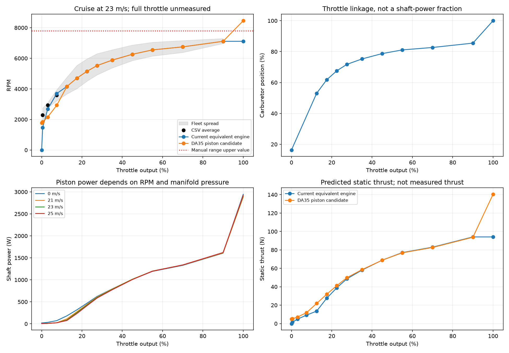
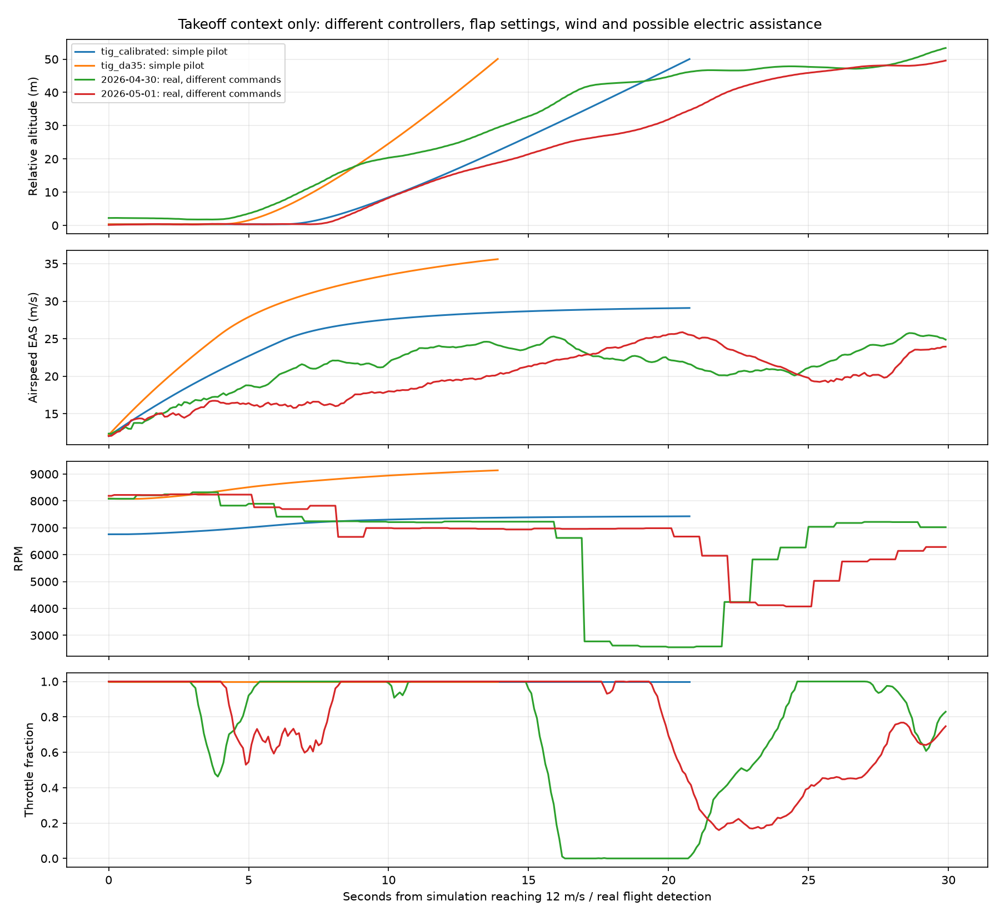

Candidate only. The current default has not changed. Keep the current default. Review rated power, propeller loading, electric boost timing and real-flight errors before considering promotion.
New: cruise-flight analysis and one-parameter empirical correction. This separate variant is fitted to level/turn flight windows rather than the fleet-average spreadsheet.
The aircraft now has a separate tig_da35 definition using a native JSBSim piston engine. A fitted throttle-to-carburetor linkage replaces the equivalent-power mapping. Power comes from JSBSim's manifold pressure, mixture, RPM and loss calculations; RPM is still determined by propeller loading. There is no forced RPM or artificial 1.62 kW cap.
The old DA35 file's power_factor_vs_rpm table is not a supported FGPiston table. Its custom shaft-power-hp function is not consumed by the piston power calculation. Both have been removed from the candidate. Explicit geometry, friction and starting parameters replace large-engine defaults.
The supplied S-410 Tiguar User Manual v3.0, page 8, confirms 35 cc, one cylinder, two strokes, 1650 RPM idle and a 1650–7800 RPM operating range. The manufacturer product page lists 1500–8200 RPM and no horsepower rating (checked October 29, 2026). The retained 4.5 hp rating is an unverified seed-file assumption. The installed variant has not been established.
The user recalls approximately 20% electric assistance during takeoff or initial climb only. Exact shaft power and time intervals remain unverified; this recollection is distinct from nominal system capability. Manual section 4.1 describes approximately 50% takeoff power boost, normal flight on the gasoline engine, and a brushless electric motor labeled 2200 W / 230 KV. These nominal figures do not identify actual shaft assistance in the logs. Cruise calibration is conditional on the CSV excluding boosted climb samples. The candidate has no boost model; it must not absorb boosted takeoff output into a gasoline-only rating.
The bore/stroke split, losses, compression, mixture, thermal properties and manifold lag remain assumptions. JSBSim's piston model still uses a four-stroke-like airflow calculation (RPM/2) even with cycles=2, so fuel consumption and temperatures must not be treated as measured DA35 performance. Rotation sense remains unchanged because the manual does not specify its viewing direction.

Nine supported cruise bins are fitted at 23 m/s TAS, density 1.1396 kg/m³. RMS relative RPM error is 0.0000%. This is a consistency check against the fitting targets, not independent validation. The three lower bins exceed the available propeller coefficient domain at cruise and are excluded.
Zero throttle is a running static idle; ignition off is shutdown. The 90% midpoint matches the highest CSV bin, while 100% opens the carburetor fully. That final segment is unmeasured. The candidate reaches 8731 RPM in full-throttle bench tests, above the manual's range. JSBSim's maxrpm parameter is a reference for engine calculations, not an RPM governor. Do not hide this discrepancy with a fictitious limiter: rated power, installed propeller coefficients and the actual throttle linkage need review.
| thr_bin | rpm_mean | supported | rpm | error_pct |
|---|---|---|---|---|
| 0-1 | 2281.250 | False | 1837.931 | -19.433 |
| 1-5 | 2934.750 | False | 2158.720 | -26.443 |
| 5-10 | 3586.000 | False | 2931.258 | -18.258 |
| 10-15 | 4156.250 | True | 4156.250 | -0.000 |
| 15-20 | 4705.750 | True | 4705.750 | -0.000 |
| 20-25 | 5151.750 | True | 5151.750 | -0.000 |
| 25-30 | 5525.250 | True | 5525.250 | 0.000 |
| 30-40 | 5880.000 | True | 5880.000 | -0.000 |
| 40-50 | 6263.500 | True | 6263.500 | -0.000 |
| 50-60 | 6551.000 | True | 6551.000 | 0.000 |
| 60-80 | 6748.500 | True | 6748.500 | 0.000 |
| 80-100 | 7111.750 | True | 7111.750 | -0.000 |

The new standalone tests run both engines through identical simple pilot commands: five seconds at idle, a one-second ramp to full throttle, then an 8° pitch demand above 18 m/s. They stop at 50 m altitude. They are not ArduPilot SITL and do not establish real takeoff accuracy. Real traces begin at the existing flight-detection event; simulated traces begin at 12 m/s. Ground-roll distance and time are not comparable from these anchors.
Both real takeoffs use a logged flap value of 50 initially, while this model has no calibrated flap behavior. Their RPM also exceeds 7800. Electric assistance, aircraft configuration and different commands could contribute; these data cannot isolate DA35-only power. A successful simulated takeoff is therefore not a validated real takeoff match. The one-second throttle ramp is a shared test assumption, not a fitted actuator response. An instantaneous full-power step from zero RPM caused a numerical ground-contact failure in the equivalent-power baseline and was rejected as a comparison setup.
{
"cruise_rms_error_pct": 1.1249733358058637e-06,
"cruise_max_error_pct": 2.335973825484672e-06,
"all_points_converged": true,
"cold_start_pass": true,
"ignition_shutdown_pass": true,
"starvation_shutdown_pass": true,
"max_full_throttle_rpm": 8730.779623472663,
"exceeds_manual_range": true,
"sitl_status": "Completed 620-second profile; pipeline checks passed.",
"default_changed": false,
"recommendation": "Keep the current default. Review rated power, propeller loading, electric boost timing and real-flight errors before considering promotion.",
"sitl_pipeline_pass": true,
"sitl_run": "runtime/da35_validation_retry",
"settled_phases": [
{
"mission_seq": 3,
"target_alt": 100,
"mean_alt": 100.00492499999999,
"target_eas": 23,
"mean_eas": 22.99837184906006
},
{
"mission_seq": 5,
"target_alt": 100,
"mean_alt": 99.99915000000001,
"target_eas": 25,
"mean_eas": 25.015958166122438
},
{
"mission_seq": 7,
"target_alt": 130,
"mean_alt": 130.093505,
"target_eas": 23,
"mean_eas": 23.009413146972655
},
{
"mission_seq": 8,
"target_alt": 100,
"mean_alt": 100.14563,
"target_eas": 23,
"mean_eas": 22.998721342086792
},
{
"mission_seq": 9,
"target_alt": 100,
"mean_alt": 99.948935,
"target_eas": 23,
"mean_eas": 23.003869857788086
}
],
"standalone_takeoff": [
{
"model": "tig_calibrated",
"seconds_from_throttle_ramp_to_50m": 25.3,
"reached_50m": true,
"max_rpm": 7429.389328580348,
"max_rpm_after_12_mps": 7429.389328580348,
"note": "Identical simple pilot, flaps up; not coupled ArduPilot or real-flight validation"
},
{
"model": "tig_da35",
"seconds_from_throttle_ramp_to_50m": 17.35,
"reached_50m": true,
"max_rpm": 9138.88200741002,
"max_rpm_after_12_mps": 9138.88200741002,
"note": "Identical simple pilot, flaps up; not coupled ArduPilot or real-flight validation"
}
],
"real_takeoff_context": [
{
"date": "2026-04-30",
"initial_flap": 50.0,
"max_rpm": 8321.0
},
{
"date": "2026-05-01",
"initial_flap": 50.0,
"max_rpm": 8247.0
}
]
}
Comparison against actual steady-flight windows: separate from the CSV fit and from coupled autopilot tracking checks.
MPLCONFIGDIR=/tmp/tiguar-mpl python3 scripts/da35_calibration.py python3 scripts/test_da35.py python3 scripts/run_sitl.py --model tig_da35 --name da35_validation --profile --duration 620
Coupled-flight status: Completed 620-second profile; pipeline checks passed.. Successful autopilot tracking does not establish a match to the real takeoff or separate electric and gasoline shaft power.
Sweep CSV · Cruise-bin results · Start/idle/shutdown tests · Validation details